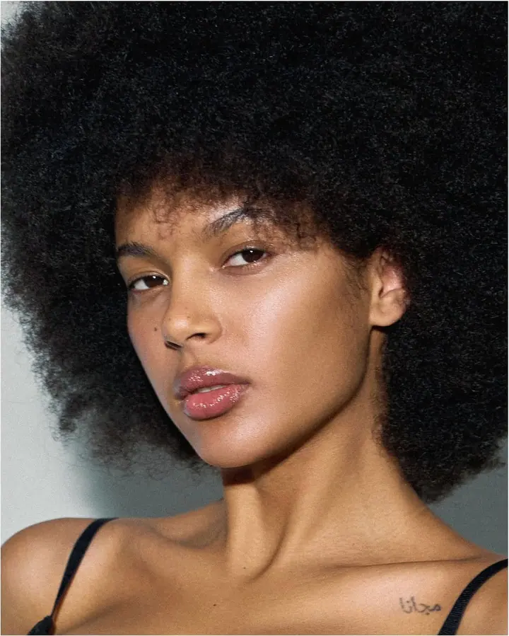
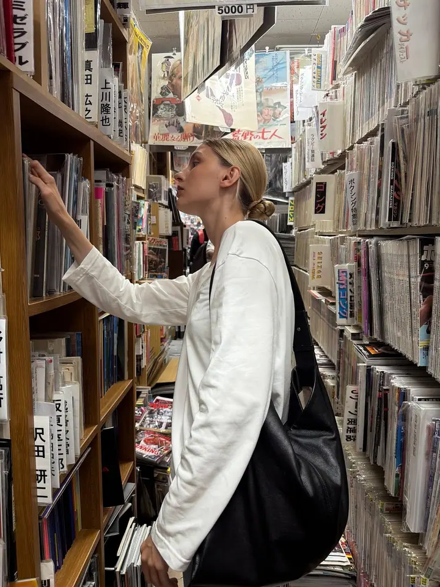

Komerční focení a katalogy
Fotím katalogy a komerční série pro módní značky, včetně kolekcí domácího oblečení. Pomohu s výběrem outfitů i lokace, aby snímky seděly ke značce.

Fotografka a videografka módy a portrétů
Jmenuji se Ekaterina Sokolova, ale většina lidí mi říká Kate. Jsem fotografka a videografka z Moskvy a fotím katalogy a komerční série pro módní značky i klidné, čisté portréty.
Zeptat se na termín
Fotím katalogy a komerční série pro módní značky, včetně kolekcí domácího oblečení. Pomohu s výběrem outfitů i lokace, aby snímky seděly ke značce.
Klidné, čisté portréty, ve kterých vynikne tvář, světlo a styl. Předem spolu probereme outfity i místo focení.
Fotím i natáčím, takže z jednoho dne můžete mít fotky i video. Nejvíc mě baví móda a portrét: katalogy, domácí oblečení, komerční série pro značky a osobní portréty.
Před focením vám ráda pomohu s výběrem outfitů a lokace. Odpovím na všechny otázky a podrobně vysvětlím, jak focení probíhá, abyste na place věděli, co čekat.
Hodně cestuji, hlavně po Asii. Opakovaně se vracím do Japonska, byla jsem v Číně, Hongkongu i na Okinawě a v Turecku. Z cest si vozím cit pro obyčejné ulice, světlo a klidnou atmosféru, kterou pak hledám i ve vlastních fotkách.
Krátce popište, co potřebujete: katalog, portrét nebo video, a kdy byste chtěli fotit.
Společně vybereme oblečení a místo focení. Odpovím na všechny otázky a vysvětlím, jak focení proběhne.
Fotíme v klidném tempu. Když chcete i video, natočím ho během stejného dne.
Vyberu nejlepší záběry, upravím je a pošlu vám hotové fotky a video.
Ano. Před focením spolu probereme outfity i lokaci, aby všechno ladilo s tím, co chcete ukázat.
Ano, jsem fotografka i videografka. Fotky a video můžeme spojit do jednoho focení.
Ano. Fotím katalogy a komerční série pro módní značky, včetně domácího oblečení.
Záleží na rozsahu a na tom, jestli chcete i video. Napište mi, co potřebujete, a pošlu vám konkrétní nabídku.